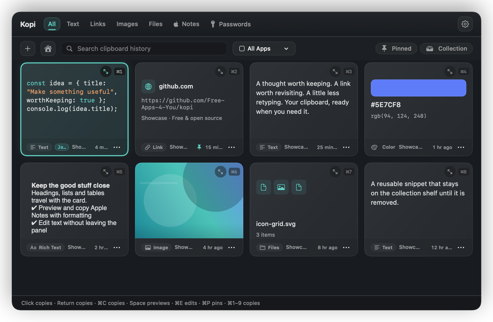
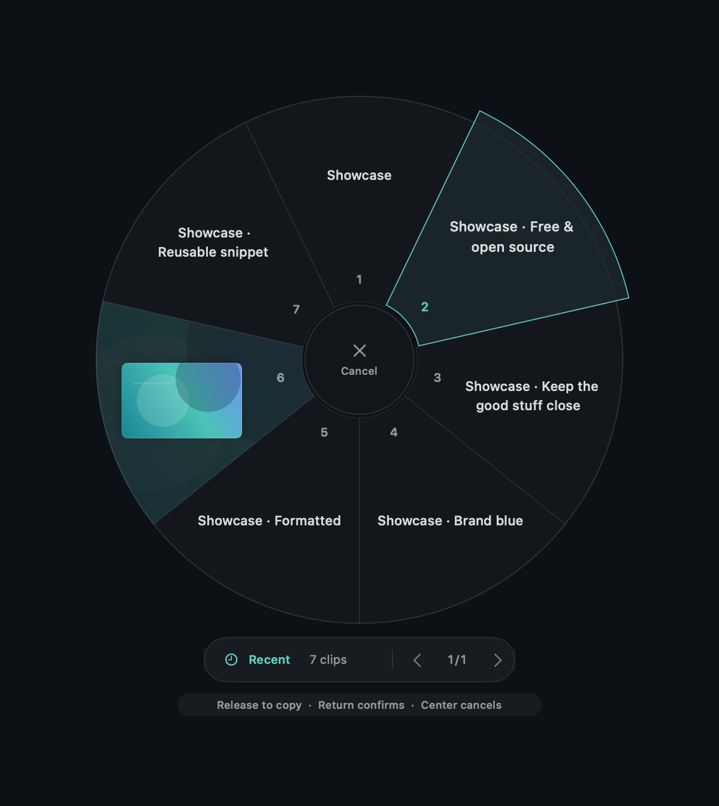
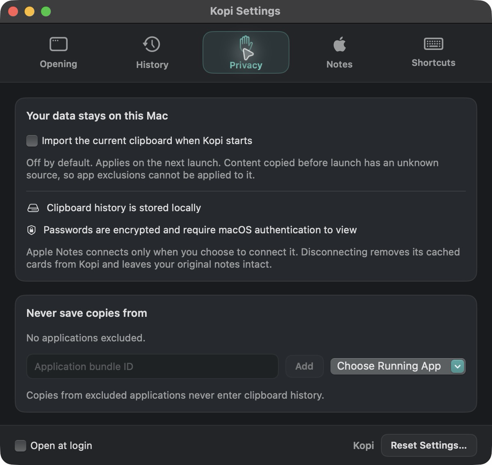

History you can trust
Every copy becomes a card with its type, the app it came from and a timestamp. Pins and collected items survive retention, Clear History and restarts.
Native · Open source · macOS 14+
Kopi is a clipboard manager for macOS that keeps everything you copy one shortcut away. It lives in the menu bar, opens under your pointer, and stores your history on your Mac — never anywhere else.


What it does
Kopi watches the clipboard quietly, files what you copy into cards you can search, edit and paste again — and then gets out of the way.
Every copy becomes a card with its type, the app it came from and a timestamp. Pins and collected items survive retention, Clear History and restarts.
Headings, lists, checklists, tables, colours and inline styles stay attached to the card. Preview and copy formatted Apple Notes — notes themselves stay read-only.
Hold ⌥Space and a radial wheel opens under your cursor. Move toward a slice, release, and the card is copied.
Search text, links, images and files — including URL fragments and code snippets — or filter the history by the app each copy came from.
Pin the clips you reach for daily, and keep reusable snippets on the Collection shelf where retention and Clear History leave them alone.
Images preview inline, code is syntax highlighted, and a colour value arrives as a swatch with one-click HEX and RGB copies.
Browse and search Apple Notes with All, On My Mac and iCloud filters. Kopi only reads and copies notes.
Passwords are encrypted on disk and only reveal themselves after macOS authentication, then hide again after twenty seconds.
Excluded applications, a pause switch, adjustable retention and a local-only history. Nothing is uploaded, and there is no account to create.
How it feels
Kopi lives in the menu bar, but you never have to reach for it. Rest your pointer on the MacBook notch — or the top-centre edge of any display — and the panel grows out of the screen. Press ⌥⌘V from anywhere, or hold ⌥Space for the radial wheel.
Anything — text, a link, a picture, files — as you normally would.
Hover the notch, press the shortcut, or hold ⌥Space at your pointer.
Click a card, press Return, or release the radial shortcut.
Gallery
Every picture below is a real screenshot drawn by Kopi itself, so what you see is exactly what the application renders.
Under the hood
Kopi is a native Swift application. It renders with SwiftUI and AppKit, keeps its data in SQLite on your Mac, and asks macOS for permission only when it genuinely needs it.
Strict concurrency, actors for the clipboard, database and Notes work, and immutable snapshots passed between them. UI work stays on the main actor.
History, pins and collections live in a WAL-mode database with synchronous=FULL, so a card is on disk before Kopi says it was saved.
Substring search over three characters or more, which finds a URL fragment or half a line of code instead of requiring whole words.
Apple Notes is reached through its supported scriptable interface — never its private database — and only after you choose to connect it.
Thumbnails, previews and search pages all have explicit limits, so a long history costs a predictable amount of memory.
CI builds and tests the packaged app on Apple Silicon and Intel runners, and every release publishes a separate installer for each.
Privacy
There is no account, no sync service and no telemetry. History is written to a SQLite file inside your own Application Support folder, and the only network request Kopi ever makes is the one you make when you download it.

Questions
Any Mac running macOS 14 Sonoma or later, on both Apple Silicon and Intel. Separate installers are published for each processor — check Apple menu → About This Mac if you are not sure which one you need.
It records what you copy, which is the point — but you stay in control. You can exclude specific applications, pause saving entirely, choose how long history is kept, and clear it whenever you like. Pinned and collected cards are never removed by a cleanup pass.
It reads them, and it copies from them. Kopi cannot create, edit, delete or move a note — the Apple Notes integration is read-only by design, and any rich note opens in Apple Notes itself when you want to edit it.
No. Kopi copies the card you choose and lets you paste where you want. Nothing is typed into another application on your behalf, which is why the radial wheel releases into a copy rather than a paste.
Yes. Kopi is MIT licensed and free to download, use and modify. It also has no premium tier, no trial timer and no in-app purchases.
The current preview is ad-hoc signed and not notarized, so Gatekeeper may ask you to confirm. Open the DMG, drag Kopi into Applications, then right-click the app and choose Open once.
Get Kopi
Download the build for your Mac, drag it into Applications, and start copying.
Prefer a ZIP? Apple Silicon · Intel — or browse every release.